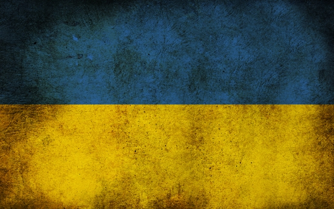

Hello HTML

Ukraine is considering shutting down Zaporizhzhia nuclear power plant, chief nuclear inspector says
Ukraine is considering shutting down the Zaporizhzhia nuclear power plant due to the deteriorating security
situation, said Oleh Korikov, the chief state inspector for nuclear and radiation safety of Ukraine.
“If conditions requiring the plant to be shut down arise, the plant and power unit No. 6 will be shut down,” Korikov
said on Wednesday.
"The continued deterioration of the situation, the prolonged lack of power supply from an external source of
electricity will force us to deploy standby diesel generators, and it is extremely difficult to top up the diesel
fuel supply during the war,” he added.
Korikov said maintaining the diesel generators running would not be sustainable.
Officials say Ukrainian forces seek to retake Kherson by the end of 2022
One week into a new counteroffensive, Ukrainian forces are making gains in the south, with the ambitious goal of
taking back most of the Russian-occupied region of Kherson by the end of the year, senior US officials and Ukrainian
officials tell CNN.
The last week has seen the most ambitious ground assaults by the Ukrainians since the beginning of the invasion,
following sustained attacks on command posts, ammunition stores, and fuel reserves far behind the front lines,
according to geolocation of video and satellite imagery.
The US has observed Ukrainian forces achieve some success in attacking Russian supply lines, with the intention of
cutting off and isolating Russian troops currently deployed west of the Dnipro River, according to a senior US
official.
- Number one on the list
- Number two
- A third item